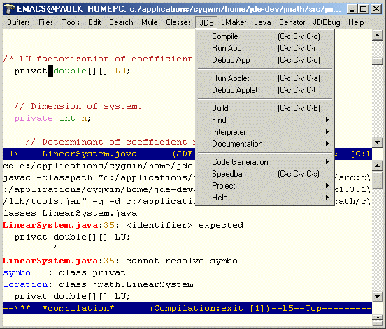
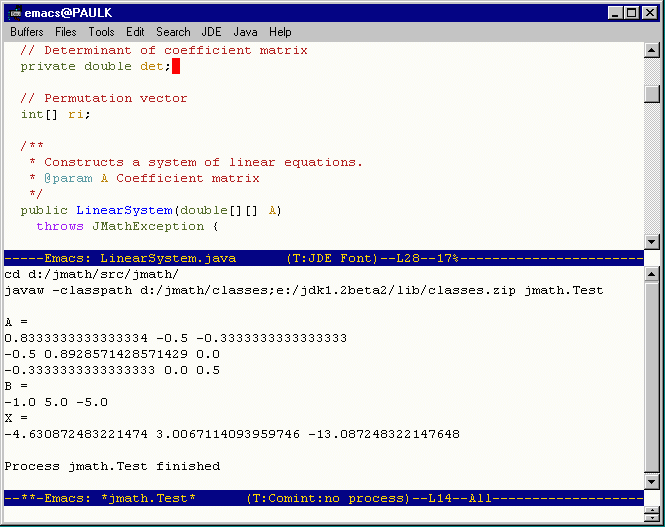
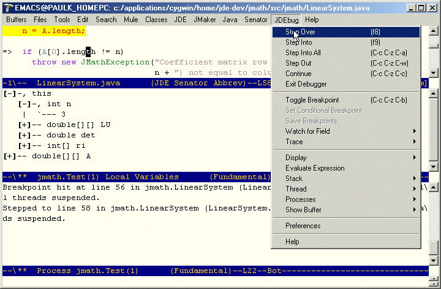
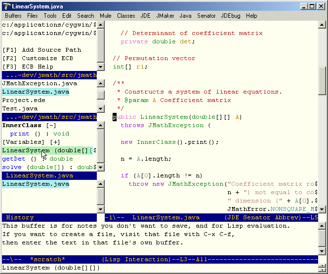
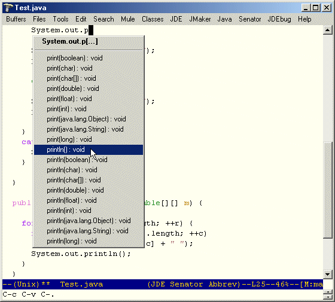

The following is a quick tour of the JDEE, illustrating some of its capabilities.
The following screenshot shows the JDEE after compilation of a class.

The upper buffer shows the Java source for the class. The lower buffer shows the output of the javac compiler. Note the error line. You can jump to the source of the error by clicking on the highlighted portion of the error line in the compilation buffer. This screenshot also show the JDE mode menu, with its associated key bindings.
The following screenshot shows the JDEE window after an application has been run. The upper buffer shows one of the classes that makes up the application. The lower buffer is the application interaction buffer. The standard output of the application appears in this buffer. Text that you type in this buffer is piped to the standard input of the application.

The following screenshot shows the JDEE during a debugging session.

The upper window shows the debugger menu and the cursor pointing to the line at which the debugger is currently stopped. The middle window displays the values of local variables. It is automatically updated as you step through a program. The lower windows displays debugger status messages.
The following screenshot shows the Emacs Code Browser (ECB) being used with the JDEE.

The column of windows at the left provide you with a heirarchical view of your project's source directories, files, fields and methods, respectively. Clicking on any object (directory, file, class, method, or field) in these windows displays the corresponding object in the source window. The bottom window displays compiler messages and other status information.
The following screenshot shows a code completion menu.

Typing C-c C-v C-. completes the method or field name
at point if there is only one possible completion. If multiple completions
are possible, the JDEE displays a menu of the possible completions. Selecting
an item causes the JDEE to use the selection to complete the field or
method at point.